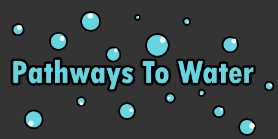

-

Currently, there is an inability for inhabitants of the rural sub-Saharan Africa region to access clean, drinking water safely and efficiently. The goal of "Pathways To Water" is to change that and provide clean water to everyone.
As you can see, this problem is very dire and if left unadressed this will cause countless deaths in the future. In order to combat this dehydration we will use drones to survey lands and collect data on the most efficient pathways to water. Then, the drones will guide communities to these sources. When a water source is contaminated or exhausted, inhabitants and organizations will be informed and the drones will show the villagers a clear path to the next body of clean water.
-
Rural Sub-Saharan Africa is where we will implement this solution
This image is from USAID shows the type of places that we will be providing aid to.
-
What We Want to Accomplish/ Mission Statement
Our aim is to provide a helping hand to those of the rural sub-Saharan Africa region to access clean and safe drinking water. By mitigating potential obstacles of receiving water, we achieve our goal of sustaining life for all of the natives. We plan to target specific areas that are in the most need. Our goal is to cover the most amount of area possible and to help as many villages as possible.
-

This photo taken by World Vision shows how tiring it is for these African familes to get acess to clean water.
The Current Situation
At the start of the 21st century unclean water is the world’s second biggest killer of children. In our increasingly prosperous world, more than 1 billion people are denied the right to clean water and 2.6 billion people lack access to adequate sanitation. This is a very serious issue and we plan to mitigate the damage as effectively as possible.
This picture shows an example of the dirty water that many Africans have to drink.
Photogrpahed by Jon Warren
This shows an African child drinking dirty water.
From https://madelinemfacey.weebly.com/thirst-in-africa.html
Contact Us
Made By Shounak, Samantha, Edward, Arwa and Melvin. Team 3 Rocks!